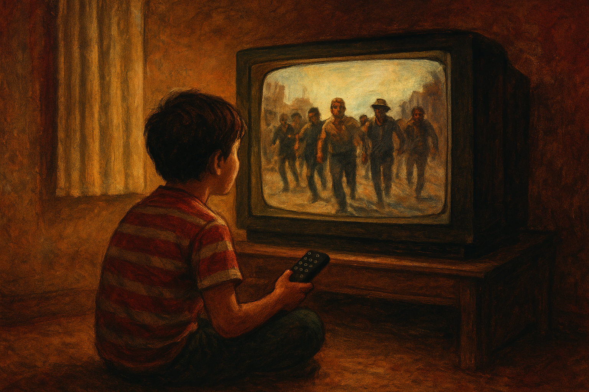

Mi vida envejeció y las películas también
Es extraño cómo algunas cosas que en su momento nos parecieron obras maestras, hoy lucen como piezas mal terminadas. En mi memoria aún suena esa frase que leí en la tapa de un VHS: “Terriblemente entretenida”. Se trataba de La última fortaleza (The Last Castle, 2001), protagonizada por Robert Redford. Recuerdo que justamente fuimos al video club solo con mi padre, esa vez falto el experto que era mi hermano, la alquilamos, y al ver la caja de lo que habíamos alquilado él soltó con ironía:
—Una película que se define como terriblemente entretenida no puede ser buena.
Tenía razón. La película no dejó huella alguna en mi vida, tanto que ni siquiera logro recordar si llegué a verla completa. Y, sin embargo, esa anécdota sí quedó, como si lo secundario se hubiera impuesto a lo principal.
Las películas que no sobrevivieron al tiempo
Con los años me di cuenta de que muchas películas envejecieron mal, muy mal. Lo curioso es que en su momento las vi decenas de veces. En mi infancia, las opciones eran dos: perder el tiempo en la calle o conquistar el control remoto de la casa cuando quedaba libre. Ese objeto era un trofeo que definía la gloria de la tarde.
Con mi hermano incluso llegamos a organizar turnos para el televisor, como si administráramos el bien más escaso de la familia. Él tenía un don: encontraba películas buenas, interesantes, con aire de culto. Yo, en cambio, me conformaba con lo popular de la TV abierta. Miraba realities como Popstars, donde vi nacer a Mambrú, mientras él se topaba con películas como Memento, de Christopher Nolan. Yo, con terquedad, criticaba: “es aburrida, es malísima”, aunque en el fondo sabía que lo que él miraba era de otro nivel.
HBO, el templo perdido
Nuestra infancia cinéfila tuvo un momento dorado: HBO gratis en Supercanal, antes de convertirse en un servicio premium. Allí descubrimos decenas de películas que nos marcaron. La caída fue brutal el día que nos enteramos de que había que pagar para seguir viéndolo. Sentimos que nos arrancaban un pedazo de la vida.
Poco después llegó otro hito: mi padre apareció un verano con una videocasetera nueva. “Vamos al videoclub para estrenarla”, me dijo. Llevé la noticia a mi hermano, que estaba jugando a la vuelta de casa, y lo recuerdo saltando con euforia, puño en alto, como si hubiéramos ganado la lotería. Nos hicimos socios de todos los videoclubes de la zona. Los sábados a la noche eran giras interminables buscando esa película que aún no habíamos visto.
Después vino la piratería: CDs grabados, DVDs, descargas eternas en JDownloader, hasta el glorioso momento de ver películas online sin cortes. Veíamos de todo. A veces hasta organizábamos nuestras funciones de “cine Z”: películas tan malas que solo servían para reírnos. De esa época salió nuestra conclusión definitiva: la peor película de la historia es Un Buen Día. Una cinta tan espantosa que ni siquiera era graciosa de lo mala que era; actuaba ahí, increíblemente, la exnovia de Al Pacino.
En paralelo, tuvimos nuestras maratones de directores. Con Wes Anderson, nos encantaba su manera de encuadrar y filmar: esa obsesión por la simetría perfecta, los colores pasteles, los travellings laterales que te llevaban de una habitación a otra como si todo fuera una maqueta viva, y esa mezcla de humor raro y melancolía que hacía que sus películas fueran como un cuento infantil pero con un trasfondo adulto y nostálgico. Vimos casi toda su filmografía. Al menos para mí, se convirtió en mi director favorito: en mi opinión no tiene ni una sola película mala. Pasamos por todas las etapas, como si nuestra historia personal estuviera escrita en la evolución tecnológica del cine doméstico.
The Warriors y el tiempo al revés
Entre todas las películas que compartimos, hubo una que me sorprendió: The Warriors (1979). La vimos ya de grandes, cuando todavía vivíamos juntos. Lo curioso es que no la vi envejecer: la descubrí ya vieja, y eso cambia la perspectiva. Me fascinó su premisa: una pandilla acusada injustamente de un asesinato que debe atravesar Nueva York de noche, barrio por barrio, sobreviviendo a otras bandas. Con todas sus precariedades técnicas, sigue siendo magnética.
Eso me llevó a un pensamiento: ¿es diferente descubrir algo ya envejecido que ver cómo se deteriora con los años? La respuesta me llegó al revisar Mad Max (1979). Una película que, aunque fundó una saga legendaria, me resultó torpe: transiciones bruscas, un guion que se desarma al final, un villano que muere de manera absurda con los ojos saliéndose en unos efectos baratos. Lo curioso es que esa misma precariedad terminó cimentando la estética del cine posapocalíptico.
Las Tortugas Ninja y la infancia que no quiero soltar
La contradicción máxima me llegó hace poco. Vi un video de Mariano Rodríguez en YouTube analizando Tortugas Ninja III (1993). Esa película fue parte de mi niñez: la alquilé, la vi incontables veces, y a mis cuatro años era oro puro. Pero hoy, al repasarla, no queda duda: es un desastre. Guion flojo, tramas incoherentes, animatrónicos que parecían sacados de una pesadilla barata.
Y sin embargo, no puedo odiarla. Porque fue mi refugio infantil. Porque me acompañó en tardes largas y vacías. Porque la disfruté como solo un niño puede disfrutar algo, sin filtros ni prejuicios. Y ahí entendí que no se trata solo de cine: se trata de la vida.
Reflexión final
Las películas envejecen, y nosotros también. Lo que alguna vez nos pareció deslumbrante hoy puede parecernos patético. Pero eso no invalida lo que sentimos en su momento. La memoria no caduca como el celuloide. Quizás la clave esté en aceptar que hay cosas que deben quedarse donde pertenecen: en el recuerdo.
Revivir lo que nos hizo felices puede ser un arma de doble filo: corremos el riesgo de descubrir que aquello que nos salvaba ahora es solo un cascarón vacío. Como cuando volvés a tu escuela primaria y descubrís que el patio que en la memoria parecía inmenso, hoy apenas ocupa un rincón de la mirada.
Tal vez la verdadera sabiduría consista en dejar intacta esa ilusión. En seguir creyendo, aunque sepamos que el maestro Splinter era un muñeco tieso sin piernas. Porque al final, la infancia no se mide en la calidad de las películas que vimos, sino en la intensidad con la que las vivimos.
Y en ese sentido, aunque las películas hayan envejecido, yo prefiero quedarme con la emoción intacta. Como si aún estuviera frente al televisor, esperando mi turno con el control remoto en la mano.